1 Quality Check: Processing SIP. Empadronados
1.1 Input
The table to be analysed is sip.csv.
1.2 Check variables
The variables extracted from SIP are: sip, fecha_calculo, fecha_nacimiento, sexo, pais_nacimiento, sit_empadronamiento, derecho_farmacia, dpto_salud, zona_salud, fecha_alta, fecha_baja, causa_baja, fecha_defuncion, raf_ilimi, raf_ipago, and apsig.
1.2.1 Check mandatory vars
All mandatory vars are present.
1.2.2 Check all vars
mod_acred, residencia_cod_desc, centro_cod_desc, clave_medica, codigo_postal, nif_profesional, and causa_alta were not extracted.
1.2.3 Completeness
In Figure 1.1 is shown the percentage of non-missing values for each variable. Non-mandatory variables are shown at the bottom of the graph.
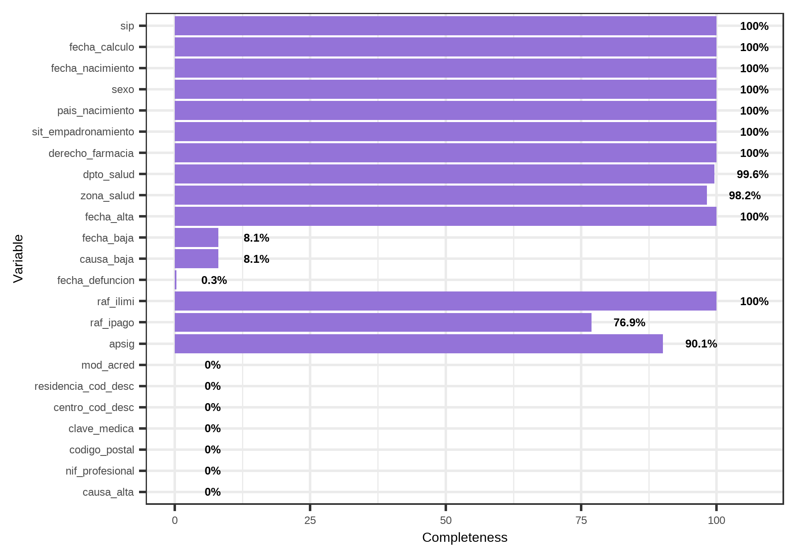
1.3 Check content
The SIP table has a total of n = 21 988 793 observations.
1.3.1 Population
- In SIP table there are 1 842 818 distinct individuals out of the 1 842 818 individuals in the target population. These represents 100% of the total.
- There are 1 842 818 individuals included in the target population.
1.3.2 Year of calculation
The variable fecha_calculo is missing in 0 observations, so it is 100% complete. Table 1.1 shows the number of individuals per year of calculation.
| Year of calculation | Count |
|---|---|
| 2009-12-31 | 1688321 |
| 2010-12-31 | 1688321 |
| 2011-12-31 | 1688321 |
| 2012-12-31 | 1688321 |
| 2013-12-31 | 1840865 |
| 2014-12-31 | 1840865 |
| 2015-12-31 | 1840865 |
| 2016-12-31 | 1840865 |
| 2017-12-31 | 1840865 |
| 2018-12-31 | 1482793 |
| 2019-12-31 | 1501263 |
| 2020-12-31 | 1507059 |
| 2021-12-31 | 1540069 |
The SIP population changes 😠.
1.3.3 Birthdate
The variable fecha_nacimiento is missing in 0 observations, so it is 100% complete.
The month and year with less birthdates was April 2008 with n = 1, December 2009 with n = 1 and the month and year with more birthdates was May 1978 with n = 59861.
In Figure 1.2, Figure 1.3, and Figure 1.4 are presented the frequencies of years, months, and days of the birthdates respectively.
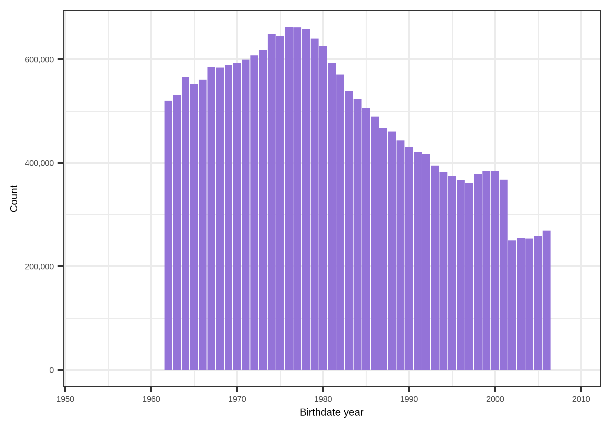
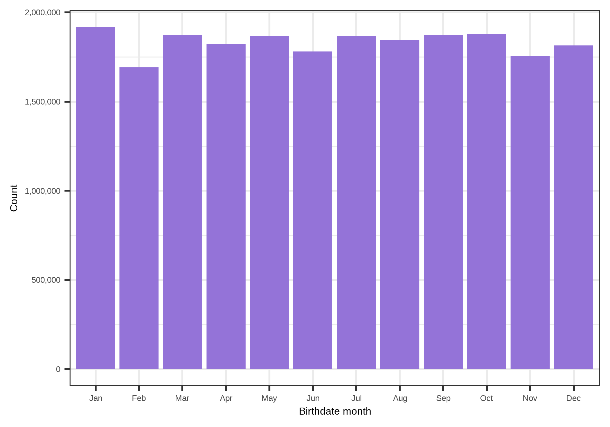
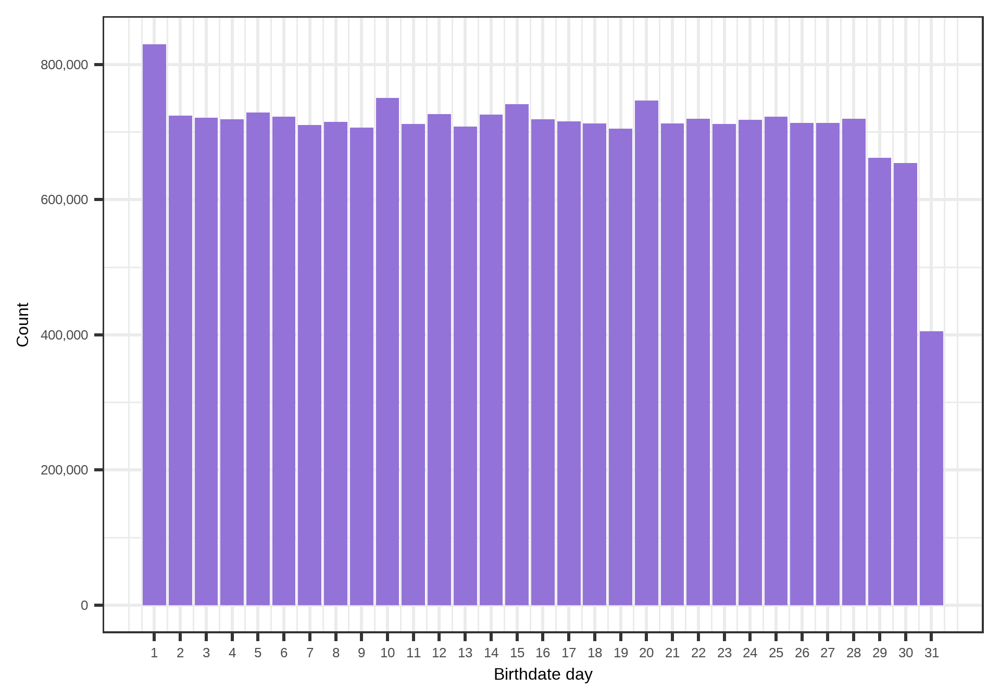
1.3.4 Sex
The variable sexo is missing in 0 observations, so it is 100% complete.
In Table 1.2 is shown the sex categories.
| Sex | Count | Percentage |
|---|---|---|
| Woman | 21988793 | 100.0% |
1.3.5 Origin country
The variable pais_nacimiento is missing in 0 observations, so it is 100% complete.
In Table 1.3 the frequencies of origin countries are presented.
| Origin country | Count | Percentage |
|---|---|---|
| 0:DESCONOCIDO | 574682 | 2.6% |
| 101:ALBANIA | 2946 | 0.0% |
| 102:AUSTRIA | 3747 | 0.0% |
| 103:BELGICA | 47401 | 0.2% |
| 104:BULGARIA | 197642 | 0.9% |
| 105:CHECOSLOVAQUIA | 2179 | 0.0% |
| 106:CHIPRE | 248 | 0.0% |
| 107:DINAMARCA | 4773 | 0.0% |
| 108:ESPAÑA | 15440804 | 70.2% |
| 109:FINLANDIA | 5577 | 0.0% |
| 110:FRANCIA | 221039 | 1.0% |
| 111:GRECIA | 2884 | 0.0% |
| 112:HUNGRIA | 14599 | 0.1% |
| 113:IRLANDA | 13215 | 0.1% |
| 114:ISLANDIA | 3307 | 0.0% |
| 115:ITALIA | 86633 | 0.4% |
| 116:LIECHTENSTEIN | 48 | 0.0% |
| 117:LUXEMBURGO | 782 | 0.0% |
| 118:MALTA | 205 | 0.0% |
| 119:MONACO | 314 | 0.0% |
| 120:NORUEGA | 18508 | 0.1% |
| 121:PAISES BAJOS | 46292 | 0.2% |
| 122:POLONIA | 57605 | 0.3% |
| 123:PORTUGAL | 28691 | 0.1% |
| 124:ANDORRA | 1598 | 0.0% |
| 125:REINO UNIDO | 273220 | 1.2% |
| 126:ALEMANIA | 111603 | 0.5% |
| 127:REP.DEMOCRATICA ALEMANA | 41 | 0.0% |
| 128:RUMANIA | 805439 | 3.7% |
| 130:SANTA SEDE | 148 | 0.0% |
| 131:SUECIA | 14967 | 0.1% |
| 132:SUIZA | 34889 | 0.2% |
| 133:U.R.S.S., UNION SOVIETICA | 554 | 0.0% |
| 134:ANTIGUA YUGOSLAVIA | 93 | 0.0% |
| 135:UCRANIA | 137541 | 0.6% |
| 136:LETONIA | 10485 | 0.0% |
| 137:MOLDOVA | 18687 | 0.1% |
| 138:BIELORRUSIA | 7544 | 0.0% |
| 139:GEORGIA | 16711 | 0.1% |
| 141:ESTONIA | 3648 | 0.0% |
| 142:LITUANIA | 44402 | 0.2% |
| 143:REPUBLICA CHECA | 10297 | 0.0% |
| 144:ESLOVAQUIA | 11684 | 0.1% |
| 145:BOSNIA-HERZEGOVINA | 2327 | 0.0% |
| 146:CROACIA | 2715 | 0.0% |
| 147:ESLOVENIA | 1592 | 0.0% |
| 148:ARMENIA | 26832 | 0.1% |
| 151:TAYIKISTAN | 57 | 0.0% |
| 154:RUSIA | 130714 | 0.6% |
| 155:YUGOSLAVIA | 2258 | 0.0% |
| 156:MACEDONIA | 1182 | 0.0% |
| 157:SERBIA | 1594 | 0.0% |
| 158:MONTENEGRO | 79 | 0.0% |
| 191:BERMUDA | 22 | 0.0% |
| 200:AMERICA DEL NORTE | 337 | 0.0% |
| 201:BURKINA FASSO | 326 | 0.0% |
| 202:ANGOLA | 1434 | 0.0% |
| 203:ARGELIA | 104275 | 0.5% |
| 204:BENIN | 254 | 0.0% |
| 206:BURUNDI | 46 | 0.0% |
| 207:CABO VERDE | 1043 | 0.0% |
| 208:CAMERUN | 4454 | 0.0% |
| 209:COMORES | 57 | 0.0% |
| 210:CONGO | 1994 | 0.0% |
| 211:COSTA DE MARFIL | 1850 | 0.0% |
| 213:EGIPTO | 2063 | 0.0% |
| 214:ETIOPIA | 1383 | 0.0% |
| 215:GABON | 393 | 0.0% |
| 216:GAMBIA | 1529 | 0.0% |
| 217:GHANA | 2384 | 0.0% |
| 218:GUINEA | 3562 | 0.0% |
| 219:GUINEA BISSAU | 952 | 0.0% |
| 220:GUINEA ECUATORIAL | 35007 | 0.2% |
| 221:KENIA | 1413 | 0.0% |
| 222:LESHOTO | 35 | 0.0% |
| 223:LIBERIA | 407 | 0.0% |
| 224:LIBIA | 1500 | 0.0% |
| 225:MADAGASCAR | 408 | 0.0% |
| 226:MALAWI | 50 | 0.0% |
| 227:MALI | 3381 | 0.0% |
| 228:MARRUECOS | 522651 | 2.4% |
| 229:MAURICIO (ISLA) | 146 | 0.0% |
| 230:MAURITANIA | 3448 | 0.0% |
| 231:MOZAMBIQUE | 562 | 0.0% |
| 232:NAMIBIA | 128 | 0.0% |
| 233:NIGER | 29 | 0.0% |
| 234:NIGERIA | 40450 | 0.2% |
| 235:REPUBLICA CENTROAFRICANA | 300 | 0.0% |
| 236:SUDAFRICA | 1831 | 0.0% |
| 237:RUANDA | 151 | 0.0% |
| 238:SANTO TOME Y PRINCIPE | 190 | 0.0% |
| 239:SENEGAL | 16391 | 0.1% |
| 240:SEYCHELLES (ISLAS) | 13 | 0.0% |
| 241:SIERRA LEONA | 1207 | 0.0% |
| 242:SOMALIA | 466 | 0.0% |
| 243:SUDAN | 446 | 0.0% |
| 245:TANZANIA | 219 | 0.0% |
| 246:CHAD | 81 | 0.0% |
| 247:TOGO | 408 | 0.0% |
| 248:TUNEZ | 2154 | 0.0% |
| 249:UGANDA | 216 | 0.0% |
| 250:ZAIRE | 419 | 0.0% |
| 251:ZAMBIA | 203 | 0.0% |
| 252:ZIMBABWE | 333 | 0.0% |
| 253:ERITREA | 125 | 0.0% |
| 299:PAÍSES DE AFRICA SIN RELA | 52 | 0.0% |
| 300:AMERICA CENTRAL | 89 | 0.0% |
| 301:CANADA | 4336 | 0.0% |
| 302:ESTADOS UNIDOS DE AMERICA | 20869 | 0.1% |
| 303:MEJICO | 30953 | 0.1% |
| 310:ANTIGUA Y BARBUDA | 26 | 0.0% |
| 311:BAHAMAS (LAS) | 47 | 0.0% |
| 312:BARBADOS | 51 | 0.0% |
| 313:BELICE | 51 | 0.0% |
| 314:COSTA RICA | 3050 | 0.0% |
| 315:CUBA | 97976 | 0.4% |
| 316:DOMINICA | 1413 | 0.0% |
| 317:EL SALVADOR | 9597 | 0.0% |
| 318:GRANADA | 177 | 0.0% |
| 319:GUATEMALA | 8450 | 0.0% |
| 320:HAITI | 267 | 0.0% |
| 321:HONDURAS | 121955 | 0.6% |
| 322:JAMAICA | 76 | 0.0% |
| 323:NICARAGUA | 20774 | 0.1% |
| 324:PANAMA | 3599 | 0.0% |
| 325:SAN VICENTE Y GRANADINAS | 13 | 0.0% |
| 326:REPUBLICA DOMINICANA | 53864 | 0.2% |
| 327:TRINIDAD-TOBAGO | 84 | 0.0% |
| 328:SANTA LUCIA | 11 | 0.0% |
| 329:SAN CRISTOBAL Y NIEVES | 19 | 0.0% |
| 340:ARGENTINA | 249557 | 1.1% |
| 341:BOLIVIA | 213065 | 1.0% |
| 342:BRASIL | 139258 | 0.6% |
| 343:COLOMBIA | 597446 | 2.7% |
| 344:CHILE | 37637 | 0.2% |
| 345:ECUADOR | 385201 | 1.8% |
| 346:GUAYANA | 44 | 0.0% |
| 347:PARAGUAY | 83660 | 0.4% |
| 348:PERU | 70930 | 0.3% |
| 349:SURINAM | 164 | 0.0% |
| 350:URUGUAY | 80961 | 0.4% |
| 351:VENEZUELA | 231825 | 1.1% |
| 390:PUERTO RICO | 522 | 0.0% |
| 391:ARUBA | 31 | 0.0% |
| 392:ANTILLAS NEERLANDESAS | 111 | 0.0% |
| 399:PAÍSES DE AMÉRICA SIN REL | 22 | 0.0% |
| 400:SUDAMERICA | 24 | 0.0% |
| 401:AFGANISTAN | 1070 | 0.0% |
| 402:ARABIA SAUDITA | 643 | 0.0% |
| 403:BAHREIN | 9 | 0.0% |
| 404:BANGLADESH | 1735 | 0.0% |
| 405:MYANMAR (BIRMANIA) | 52 | 0.0% |
| 407:CHINA | 151418 | 0.7% |
| 408:EMIRATOS ARABES UNIDOS | 238 | 0.0% |
| 409:FILIPINAS | 9499 | 0.0% |
| 410:INDIA | 32707 | 0.1% |
| 411:INDONESIA | 1443 | 0.0% |
| 412:IRAQ | 1997 | 0.0% |
| 413:IRAN | 4533 | 0.0% |
| 414:ISRAEL | 1241 | 0.0% |
| 415:JAPON | 4158 | 0.0% |
| 416:JORDANIA | 1617 | 0.0% |
| 417:CAMBOYA | 16 | 0.0% |
| 417:KAMPUCHEA (CAMBOYA) | 25 | 0.0% |
| 418:KUWAIT | 402 | 0.0% |
| 419:LAOS | 58 | 0.0% |
| 420:LIBANO | 2868 | 0.0% |
| 421:MALASIA | 479 | 0.0% |
| 422:MALDIVAS | 10 | 0.0% |
| 423:MONGOLIA | 373 | 0.0% |
| 424:NEPAL | 4636 | 0.0% |
| 425:OMAN | 13 | 0.0% |
| 426:PAKISTAN | 54768 | 0.2% |
| 427:QATAR | 34 | 0.0% |
| 429:YEMEN DEL NORTE | 8 | 0.0% |
| 430:KOREA DEL SUR | 1703 | 0.0% |
| 431:KOREA DEL NORTE | 53 | 0.0% |
| 432:SINGAPUR | 370 | 0.0% |
| 433:SIRIA | 6378 | 0.0% |
| 434:SRI-LANKA (CEILAN) | 192 | 0.0% |
| 435:TAILANDIA (SIAM) | 3477 | 0.0% |
| 436:TURQUIA | 2821 | 0.0% |
| 437:VIETNAM (NORTE Y SUR) | 1329 | 0.0% |
| 438:TAIWAN (CHINA FORMOSA) | 890 | 0.0% |
| 439:BRUNEI | 26 | 0.0% |
| 441:YEMEN | 115 | 0.0% |
| 442:AZERBAIYAN | 796 | 0.0% |
| 443:KAZAJSTAN | 4139 | 0.0% |
| 444:KIRGVISTAN | 747 | 0.0% |
| 445:TADYIKISTAN | 12 | 0.0% |
| 446:TURKMENISTAN | 67 | 0.0% |
| 447:UZBEKISTAN | 925 | 0.0% |
| 448:PALESTINA | 998 | 0.0% |
| 499:PAÍSES DE ASIA SIN RELACI | 10 | 0.0% |
| 500:ASIA | 92 | 0.0% |
| 501:AUSTRALIA | 3239 | 0.0% |
| 502:FIJI | 9 | 0.0% |
| 504:NUEVA ZELANDA | 1371 | 0.0% |
| 505:PAPUA NUEVA GUINEA | 26 | 0.0% |
| 508:TONGA | 71 | 0.0% |
| 509:VANUATU | 72 | 0.0% |
| 511:MICRONESIA | 54 | 0.0% |
| 514:TIMOR ESTE | 74 | 0.0% |
| 539:VIETNAN SUR | 211 | 0.0% |
| 541:PALESTINA | 41 | 0.0% |
| 555:DESCONOCIDO | 119 | 0.0% |
| 590:ARABE | 10 | 0.0% |
| 600:AFRICA | 497 | 0.0% |
| 900:BIELORUSIA | 78 | 0.0% |
| 901:CEYLAN | 13 | 0.0% |
| 902:PUERTO RICO | 42 | 0.0% |
| 903:UCRANIA | 2773 | 0.0% |
| 966:OTROS TERRITORIOS ESPAÑOL | 451 | 0.0% |
| 999:NO CONSTA | 47 | 0.0% |
1.3.6 Census situation
The variable sit_empadronamiento is missing in 50 observations, so it is 100% complete.
In Table 1.4 and Figure 1.5 are presented the census situation categories counts. Finally, Figure 1.6 shows the count of census situations per year.
| Census situation | Count | Percentage | valid_percent |
|---|---|---|---|
| 1:EMPADRONADO C.VALENCIANA | 19263836 | 87.6% | 87.6% |
| 2:NO EMPADRON. MAS 1 MES | 886665 | 4.0% | 4.0% |
| 3:NO EMPADRON. MENOS 1 MES | 1542301 | 7.0% | 7.0% |
| 4:PENDIENTE DE CONFIRMAR | 295941 | 1.3% | 1.3% |
| NA | 50 | 0.0% | - |
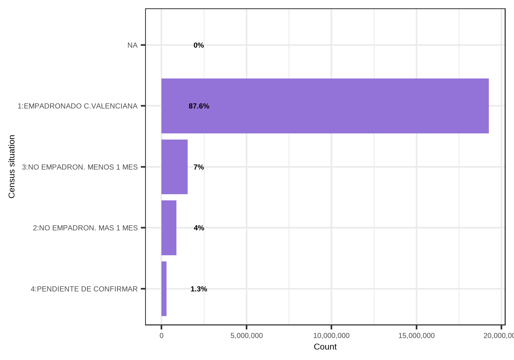
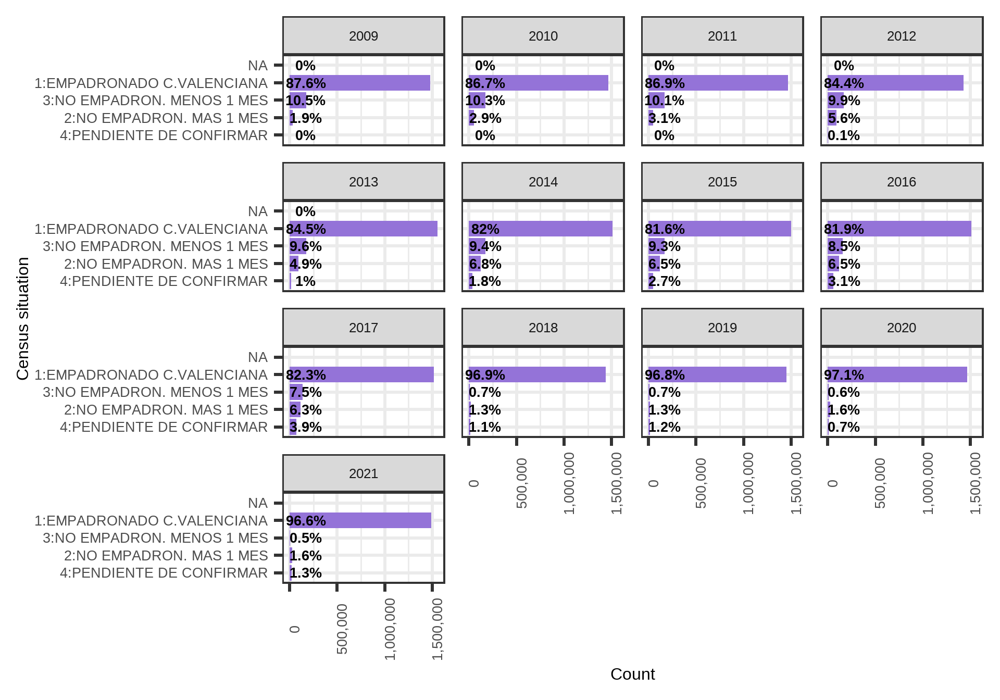
1.3.7 Pharmacy rights
The variable derecho_farmacia is missing in 26 observations, so it is 100% complete.
In Table 1.5 is shown the pharmacy rights counts.
| Pharmacy Rights | Count | Percentage | valid_percent |
|---|---|---|---|
| N | 2837726 | 12.9% | 12.9% |
| S | 19151041 | 87.1% | 87.1% |
| NA | 26 | 0.0% | - |
1.3.8 Health department
The variable dpto_salud is missing in 79988 observations, so it is 99.6% complete.
Figure 1.7 shows the count of people who pertain at the distinct health departments.
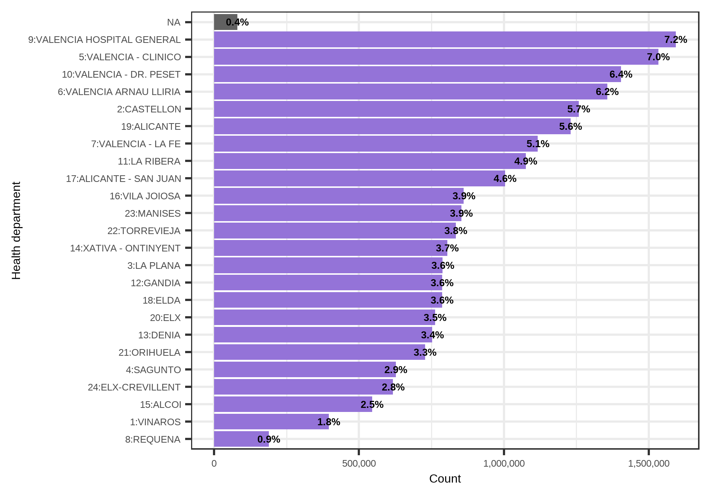
In Table 1.6 is shown the number of distinct health departments by year.
| Year of calculation | Number of health departments |
|---|---|
| 2009-12-31 | 23 |
| 2010-12-31 | 24 |
| 2011-12-31 | 24 |
| 2012-12-31 | 24 |
| 2013-12-31 | 24 |
| 2014-12-31 | 24 |
| 2015-12-31 | 24 |
| 2016-12-31 | 24 |
| 2017-12-31 | 24 |
| 2018-12-31 | 24 |
| 2019-12-31 | 24 |
| 2020-12-31 | 24 |
| 2021-12-31 | 24 |
1.3.9 Health basic area
The variable zona_salud is missing in 393297 observations, so it is 98.2% complete.
In Table 1.7 is shown the number of distinct health basic areas by year.
| Year of calculation | Number of health departments |
|---|---|
| 2009-12-31 | 229 |
| 2010-12-31 | 236 |
| 2011-12-31 | 236 |
| 2012-12-31 | 236 |
| 2013-12-31 | 236 |
| 2014-12-31 | 236 |
| 2015-12-31 | 241 |
| 2016-12-31 | 241 |
| 2017-12-31 | 241 |
| 2018-12-31 | 241 |
| 2019-12-31 | 241 |
| 2020-12-31 | 241 |
| 2021-12-31 | 241 |
1.3.10 Registration date
The variable fecha_alta is missing in 0 observations, so it is 100% complete.
The month and year with less registrations was March 1993 with n = 9, August 1993 with n = 9, October 1993 with n = 9, June 1994 with n = 9, September 1995 with n = 9 and the month and year with more registrations was November 1999 with n = 2519396.
In Figure 1.8, Figure 1.9, and Figure 1.10 are presented the counts of registrations by years, months, and days respectively.
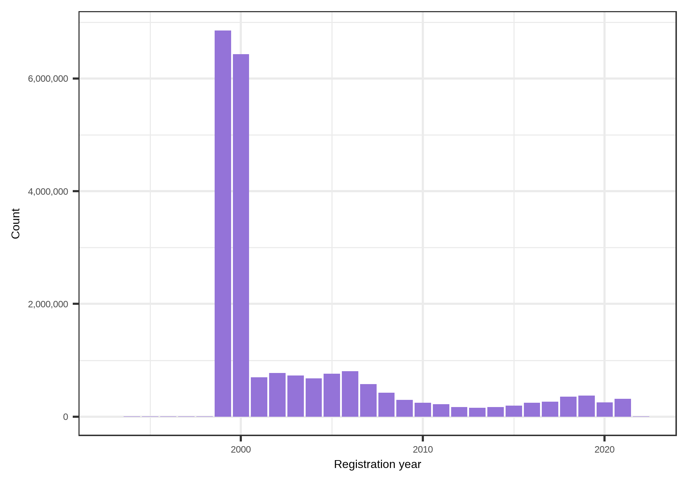
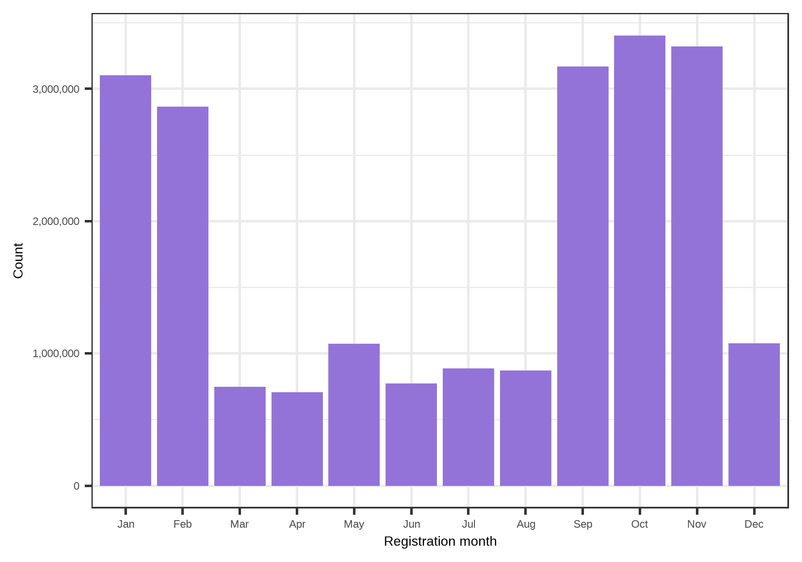
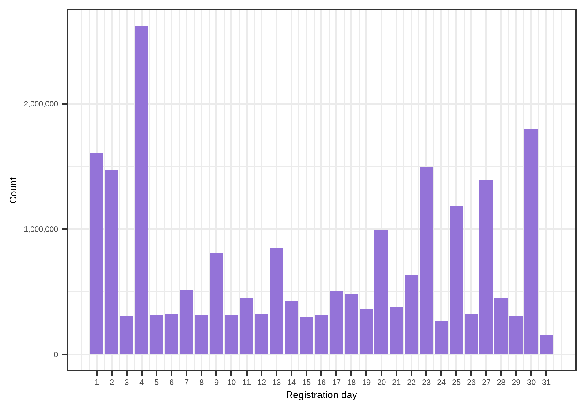
1.3.11 Deregistration date
The variable fecha_baja is missing in 20208178 observations, so it is 8.1% complete.
The month and year with less deregistrations was January 1991 with n = 1, September 1991 with n = 1 and the month and year with more deregistrations was January 2012 with n = 233058.
In Figure 1.11, Figure 1.12, and Figure 1.13 are presented the counts of deregistrations by years, months, and days respectively.
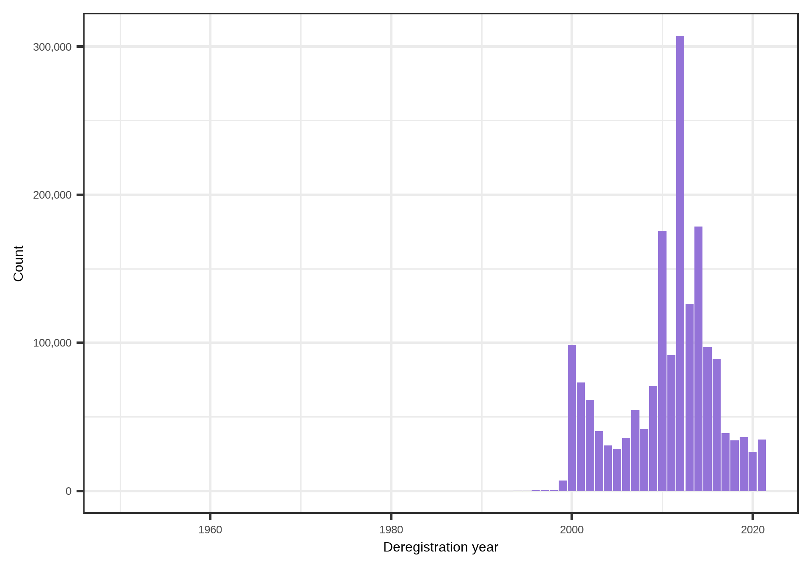
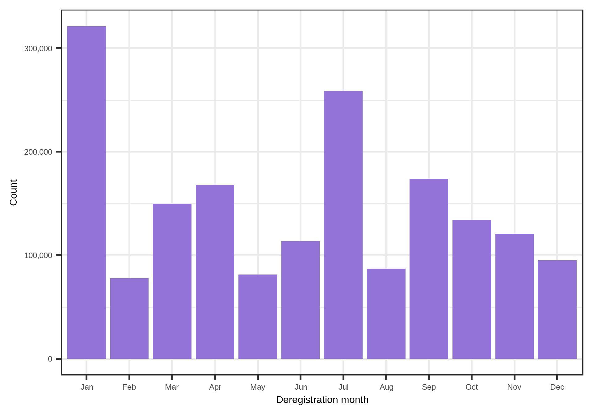
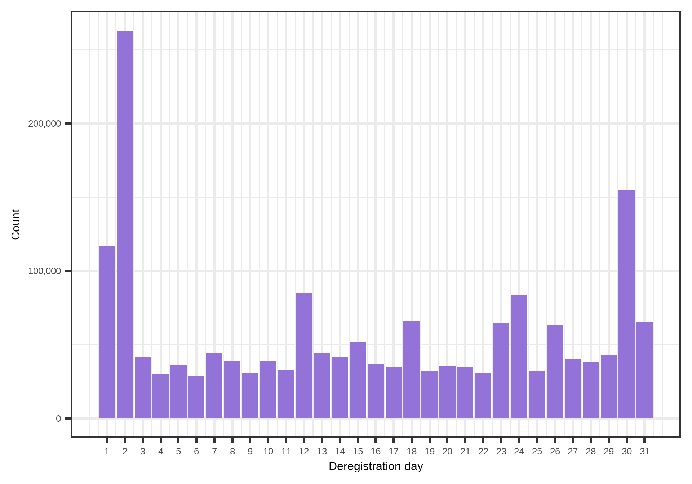
1.3.12 Deregistration cause
The variable causa_baja is missing in 20208178 observations, so it is 8.1% complete.
In Table 1.6 is shown the frequencies of the distinct deregistration causes.
| Deregistration cause | Count | Percentage | valid_percent |
|---|---|---|---|
| A:BAJA AUTOMATICA NO EMPADRONADO | 336973 | 1.5% | 18.9% |
| B:BAJA ADMINISTRATIVA | 11038 | 0.1% | 0.6% |
| C:CAMBIO DOMICILIO OTRA CA/PAIS | 84590 | 0.4% | 4.8% |
| D1:BAJA DUPLICADO DESDE SIA | 532 | 0.0% | 0.0% |
| D:DUPLICADO | 385711 | 1.8% | 21.7% |
| E:ERROR. NO DEBIO ENTRAR EN SIP | 15057 | 0.1% | 0.8% |
| F:FALLECIMIENTO | 18147 | 0.1% | 1.0% |
| FA:BAJA FALLECIDO CRUCE DIRECTO | 197 | 0.0% | 0.0% |
| G:BAJA POR DEFUNCI<d3>N TESORERIA | 5264 | 0.0% | 0.3% |
| G:BAJA POR DEFUNCIÓN TESORERIA | 6802 | 0.0% | 0.4% |
| H1:BAJA FALLECIDO DESDE SIS | 1371 | 0.0% | 0.1% |
| H2:BAJA HOSPITAL FALLECIDO SW | 42 | 0.0% | 0.0% |
| H:BAJA HOSPITAL FALLECIDO | 26807 | 0.1% | 1.5% |
| I:INFORMATICA | 198 | 0.0% | 0.0% |
| K:BAJA ADMINISTRATIVA POR COMPAS | 399 | 0.0% | 0.0% |
| MU:MUTUALISTA SIN CONFIRMAR EMPAD | 3354 | 0.0% | 0.2% |
| NA:BAJA EMPADR. Y ACRED. DUDOSA | 134665 | 0.6% | 7.6% |
| NE:BAJA INE NO EMPADRONADO | 454223 | 2.1% | 25.5% |
| O:OTROS MOTIVOS | 7167 | 0.0% | 0.4% |
| P:BAJA FALLECIDO DOCUMENTAL | 387 | 0.0% | 0.0% |
| S:BAJA F.A.S. | 212 | 0.0% | 0.0% |
| SC:BAJA SNS TRASLADO COMUNIDAD | 274597 | 1.2% | 15.4% |
| SD:FALLECIDO SNS OTROS: INSS/HOSP | 6215 | 0.0% | 0.3% |
| SF:BAJA FALLECIDO SNS JUSTICIA | 6129 | 0.0% | 0.3% |
| T:TRASLADO CENTROS | 538 | 0.0% | 0.0% |
| NA | 20208178 | 91.9% | - |
1.3.13 Death date
The variable fecha_defuncion is missing in 21918853 observations, so it is 0.3% complete.
The month and year with less deaths was January 1991 with n = 1, September 1991 with n = 1, March 1998 with n = 1 and the month and year with more deaths was September 2004 with n = 1863.
In Figure 1.14, Figure 1.15, and Figure 1.16 are presented the counts of deaths by years, months, and days respectively.
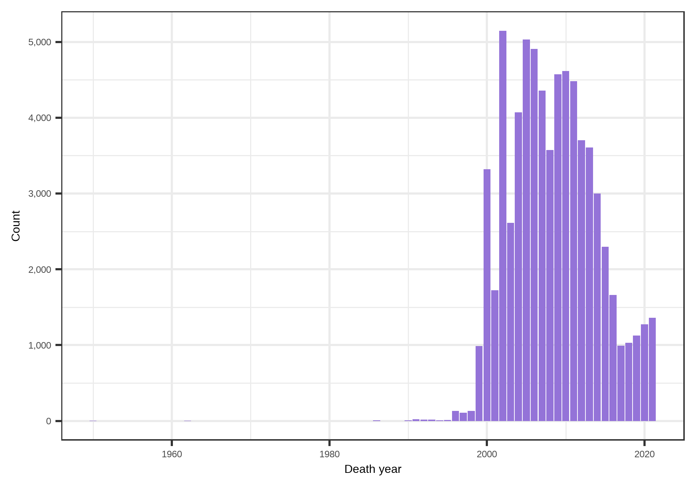
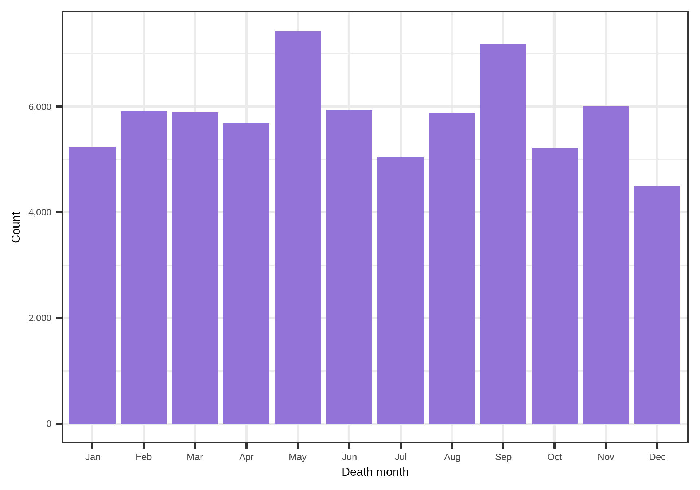

1.3.14 Copayment percentage
The variable raf_ipago is missing in 5071064 observations, so it is 76.9% complete.
In Table 1.9 is shown the frequencies of the distinct copayment situation categories.
| Copayment situation | Count | Percentage | valid_percent |
|---|---|---|---|
| F 003 | 149633 | 0.7% | 0.9% |
| F 004 | 2991 | 0.0% | 0.0% |
| NOFAR | 1601048 | 7.3% | 9.5% |
| TSI 000 | 794290 | 3.6% | 4.7% |
| TSI 001 | 981824 | 4.5% | 5.8% |
| TSI 002 | 625461 | 2.8% | 3.7% |
| TSI 003 | 9600827 | 43.7% | 56.8% |
| TSI 004 | 2789488 | 12.7% | 16.5% |
| TSI 005 | 62919 | 0.3% | 0.4% |
| TSI 006 | 309248 | 1.4% | 1.8% |
| NA | 5071064 | 23.1% | - |
1.3.15 Copayment limit
The variable raf_ilimi is missing in 0 observations, so it is 100% complete.
In Table 1.10 is shown the frequencies of the distinct copayment limits categories.
| Copayment limit | Count | Percentage |
|---|---|---|
| 5062864 | 23.0% | |
| **** | 8208 | 0.0% |
| 0 | 14658708 | 66.7% |
| 00 | 1633095 | 7.4% |
| 01 | 45033 | 0.2% |
| 02 | 8830 | 0.0% |
| 03 | 168 | 0.0% |
| 1 | 467337 | 2.1% |
| 2 | 102621 | 0.5% |
| 3 | 1929 | 0.0% |
1.3.16 Integrated geographic segmentated code (apsig)
The variable apsig is missing in 2176761 observations, so it is 90.1% complete. Figure 1.17 shows the completeness of apsig per year
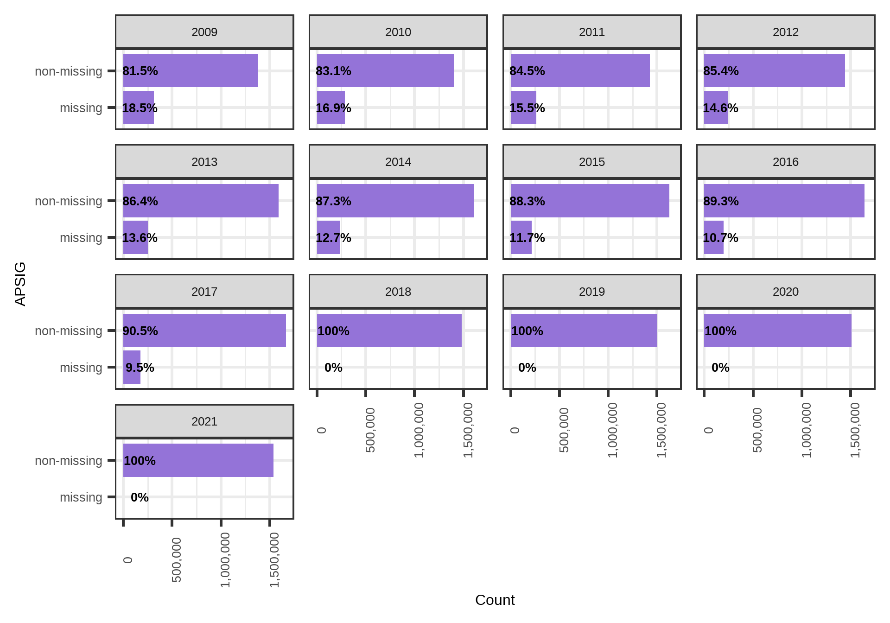